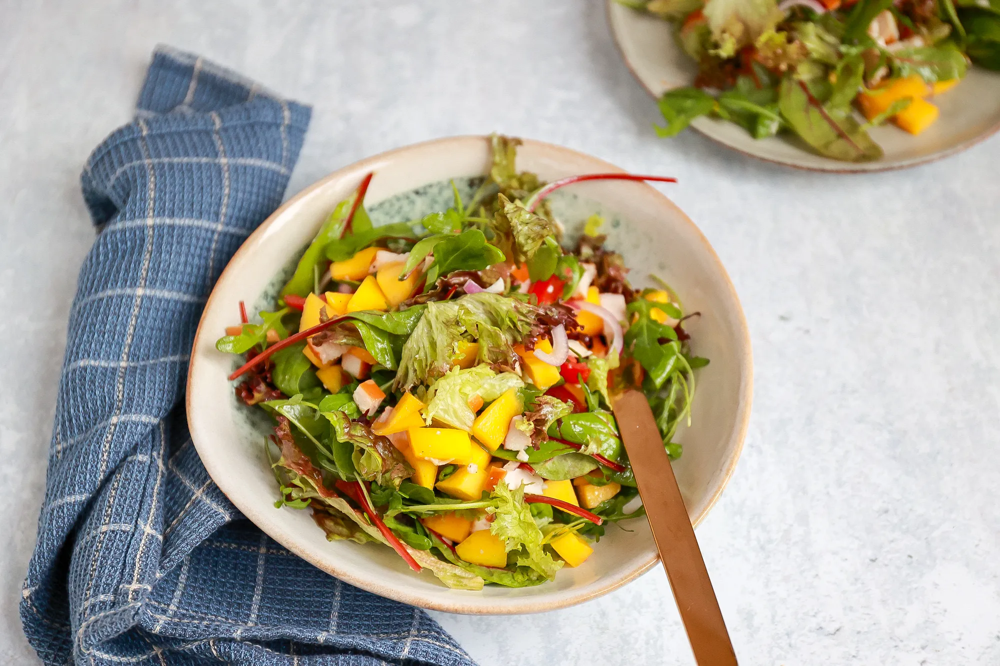

Salade met mango en kip
Deze salade met mango en kip is heel makkelijk te maken en super lekker. Serveer hem als avondmaaltijd met
een broodje
erbij.
Ingrediënten
- 100 gr gemengde sla
- 1 mango
- 100 gr gerookte kip
- 2 el olie
- 1tl honing
- snufje peper
- 1 bosuit
- 8 cherrytomaatjes
Bereidingswijze
- Meng in een klein bakje de olijfolie, honing en een snufje peper.
- Doe de gemengde sla in een grote kom.
- Schil de mango, verwijder de pit en snijd de mango in stukjes.
- Snijd de cherrytomaatjes in tweeën of vieren en snijd de gerookte kip en bosui in stukjes.
- Doe de mango, cherrytomaatjes, bosui en gerookte kip bij de sla in de kom. Voeg de dressing
toe en meng alles door
elkaar.

Tip:
Voor een betere smaak stop er zelf saus bij